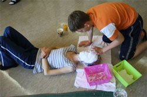
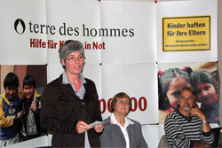
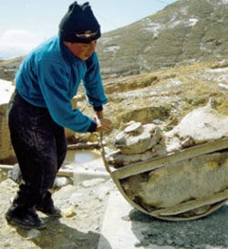
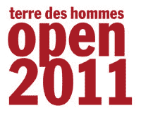

|
Donnerstag, 29. September 2011 |
Kunstprojekt der Kinderrechtler
Junge Künstler von terre des hommes prangern Umweltzerstörung in Peru an |
Mit zahlreichen eigenen Pro�jekten kämpft das Kinderrechtsteam „No�joud" von terre des hommes unter großem per�sönlichem Einsatz für ein besseres Leben der Kinder in allen Teilen der Welt. Vorbild und Namensgeberin für die Gruppe von derzeit zehn Mitgliedern ist „Nojoud" aus dem Jemen, die mit zehn Jahren zwangsverheiratet wurde, mutig ihre Scheidung durchgesetzt und alles in einem Buch festgehalten hat. Vielversprechend ist auch das jüngste Kunstprojekt, an dem als Workshop einen gan�zen langen und heißen Samstag in der Eichel�bergschule gearbeitet wurde, um es am nächs�ten Tag in der Akademie Schloss Rotenfels an�lässlich des Tages des offenen Denkmals erst�mals zu präsentieren. Entsprechend der Kam�pagne „terre des hommes open 2011" werden in den Arbeiten die Themenkomplexe Ökologie und Kinder-Lebensrechte verknüpft.
Aus der Beschäftigung mit dem Projekt „La�bor" aus Peru sei die Idee der Jugendlichen zur Herstellung der Stelen entstanden, berichtet Beatrice Büchsel von terre des hommes. Dort wird den Bauern buchstäblich das Wasser ab�gegraben, es wird in großen Mengen zur Förderung von Edelmetallen in den Minen gebraucht und danach mit allen Giften wieder in die Flüsse und das Meer abgeleitet, mit schlimmen Konsequenzen für die Menschen. Die etwa zwei Meter hohen bemalten und beschrifteten Stelen mit ausgesparten Fens�tern auf Augenhöhe sollen die Folgen der rücksichtslosen Ausbeutung der Umwelt versinn�bildlichen. Von allen Workshop-Teilnehmern ' wurden Gipsmasken angefertigt, die mit einer Erdschicht eingepinselt und in den Aussparungen angebracht werden. Aus einem Behäl�ter am oberen Ende der Stelen läuft Wasser dann langsam über die Masken an den Stelen hinunter bis in ein kleines Sockelbecken, in dem es, bedingt durch die Beigabe von Natriumhydrogencarbonat, sofort zu schäumen ' beginnt. Beispielhaft für die langsame Erosion der Erde verlieren so die Masken nach und nach ihren Überzug und werden zu Totenmas�ken.
Für die Arbeiten wird die Akademie nicht der einzige Ausstellungsort bleiben, unter an�derem werden sie in Stuttgart bei „open 2011" zu sehen sein. Die kreativen und hoch moti�vierten jungen Künstler können seit der Grün�dung ihres Kinderrechtsteams im Februar 2009 eine ganze Palette von Aktionen gegen die Ausbeutung von Kindern aufweisen, über 3.200 Euro an Spenden wurden eingesammelt sowie über 1.000 Euro durch den Verkauf aus dem „Eine-Welt-Laden" eingenommen.
Als Höhepunkte benennen sie die Übergabe der roten Handabdrücke „red hand", an den UN-Generalsekretär Ban Ki Moon oder den ehemaligen Bundespräsidenten Horst Köhler - ein Projekt von terre des hommes gegen den Einsatz von Kindersoldaten.
Neben der Herausgabe einer Kinderrechts�zeitung präsentiert sich die Gruppe auch auf einer eigenen Homepage. Im Internet unter www.team-nojoud.de kann man sich ausführlich über die Ziele und Aktivitäten informieren.
(Badische Neueste Nachrichten vom 13.09.2011, Text: Elke Fischer)
Weitere Fotos bei Flickr |
Dienstag, 27. September 2011 |
Jugendliche engagieren sich für ihre Rechte:
Internationales terre des hommes-Jugendnetzwerk gegründet! |
Jugendliche aus Lateinamerika, Indien, Südostasien und Afrika sowie aus Deutschland haben heute in Osnabrück das internationale terre des hommes-Jugendnetzwerk gegründet. Das Kinderhilfswerk terre des hommes unterstützt mit diesem Netzwerk die Jugendlichen darin, ihr in der UN-Kinderrechtskonvention niedergelegtes Recht auf Mitbestimmung bei allen sie betreffenden Angelegenheiten wahrzunehmen und politische Entscheidungen zu beeinflussen.
Ein besonderes Anliegen der Jugendlichen ist das Thema Nachhaltigkeit. Ihr erstes gemeinsames Engagement gilt deshalb der terre des hommes-Kampagne Kinder haften für ihre Eltern – Genug geredet – ökologische Kinderrechte achten! Die Thematik der ökologischen Kinderrechte betrifft die Zukunftsperspektiven von Kindern und Jugendlichen in besonderem Maße. Deshalb ist es von großer Bedeutung, ihren Stimmen mehr Gewicht zu verleihen. Auf dem UN-Gipfel für nachhaltige Entwicklung Anfang Juni 2012 in Rio de Janeiro wird eine Delegation des Jugendnetzwerkes die Forderung nach einer gesellschaftlichen Wende hin zur Nachhaltigkeit vorbringen.
»Regierungen, Unternehmen und Nichtregierungsorganisationen müssen Kindern und Jugendlichen zuhören und sie einbeziehen. Wir wollen ihnen eine Plattform für ihr Engagement geben, denn es geht um ihre Zukunft und ihre Rechte, zum Beispiel auf Bildungschancen und eine gesunde Umwelt«, erklärte Albert Recknagel, Kinderrechtsexperte von terre des hommes.
Die Jugendlichen stammen aus weltweiten terre des hommes-Projekten sowie aus den deutschen terre des hommes-KinderrechtsTeams.
Bilder vom Pressegespräch |
Donnerstag, 22. September 2011 |
terre des hommes zur Bundestagsdebatte über Kinderrechte
Kinderrechte gehören ins Grundgesetz! |
Das internationale Kinderhilfswerk terre des hommes begrüßt die Initiative von Abgeordneten der SPD-Fraktion, die Kinderrechte in Deutschland zu stärken und die bestehenden Gesetze darauf zu überprüfen, inwieweit sie den Vorgaben der UN-Kinderrechtskonvention entsprechen. Alle Fraktionen des Bundestages sind aufgefordert, sich der Initiative anzuschließen und die Verankerung der Kinderrechte im Grundgesetz auf den Weg zu bringen. Dies erklärte Danuta Sacher, Geschäftsführerin von terre des hommes, anlässlich der bevorstehenden Bundestagsdebatte über Kinderrechte am kommenden Freitag.
»Die auch von Deutschland ratifizierte Kinderrechtskonvention gibt Kindern das Recht auf Mitsprache in allen sie betreffenden Angelegenheiten. Es wäre nur konsequent, dass die Kinderrechte Verfassungsrang bekommen und es damit für die Kinder nicht bei schönen Worten und Paragraphen bleibt, sondern Kinderrechtsverstöße zügig beseitigt werden, die es bei uns nach wie vor gibt«, so Danuta Sacher. Eine besondere Schwachstelle seien die Rechte von Flüchtlingskindern. Das Gebot des Kindeswohls gegenüber Flüchtlingskindern werde immer wieder missachtet, wenn sie wegen fehlender Papiere inhaftiert und in Abschiebehaft genommen oder in Unterkünfte für Erwachsene eingewiesen werden, wo sie der Gefahr von Übergriffen ausgesetzt sind. Auch das Asylverfahren sei keinesfalls kindgerecht. »Es gibt zu wenig Hilfsangebote für Kinder, die etwa als Kindersoldaten zwangsrekrutiert waren oder Eltern und Heimat im Krieg verloren haben. Trotz der Traumabelastung dieser Kinder nehmen die Behörden oft schon kleinste Ungereimtheiten oder Gedächtnislücken zum Anlass, ihre Glaubwürdigkeit anzuzweifeln und den Asylantrag abzulehnen. Dieser Umgang mit schutzbedürftigen Minderjährigen ist beschämend und eines reichen Landes wie Deutschlands nicht würdig«, so Sacher.
terre des hommes begrüßt, dass die SPD-Abgeordneten einen Gesetzentwurf fordern, der die juristischen Konsequenzen klärt, die sich aus der Rücknahme gegen den Vorbehalt zur UN-Kinderrechtskonvention vom Mai 2010 ergeben. »Ein solches Gesetz ist überfällig, um die Kinderrechte konsequent in der Praxis zu verwirklichen«, so Danuta Sacher. »Wir brauchen auch eine vom Parlament eingesetzte und von der Regierung unabhängige Ombudsperson für die Rechte von Kindern, die geplante Gesetzesvorhaben auf ihre Kinderverträglichkeit überprüft und sicherstellt, dass bei der Gestaltung von Politik auch die Perspektiven und Lebenschancen zukünftiger Generationen einbezogen werden«, sagte Danuta Sacher. |
Mittwoch, 21. September 2011 |
Unternehmer Michael Otto spendet Preisgeld für terre des hommes-Bildungsprojekt in Indien |
Versandhaus-Unternehmer Michael Otto spendet das Preisgeld des International TÜV Rheinland Global Compact Award in Höhe von 25.000 Euro an das Kinderhilfswerk terre des hommes. Der Preis wird vom TÜV Rheinland an Persönlichkeiten verliehen, die sich besonders für die Ziele des Global Compact engagieren. Der Global Compact ist eine Initiative des Generalsekretärs der Vereinten Nationen für freiwillige verantwortliche Unternehmensführung.
terre des hommes wird die Mittel für ein Stipendienprogramm für 40 Jugendliche in Bihar, einer der ärmsten Regionen Indiens verwenden. Die Jugendlichen kommen aus Dörfern der Musahar Community und hatten bisher keinen Zugang zu Schulen oder Bildung. Kinderarbeit, und sehr frühe Verheiratung der Mädchen sind an der Tagesordnung. Um in dieser Region speziell die Bildungschancen der Jungen und Mädchen zu verbessern, fördert das Versandunternehmen Otto seit 2008 gemeinsam mit terre des hommes in Bihar und in der Hauptstadt Neu Delhi ein Entwicklungsprojekt gegen Kinderarbeit.
Bis heute konnten in der Projektregion in Bihar 1.150 Kinder eingeschult werden, das sind 80 Prozent aller Kinder. »Diese Kinder sind als Erstlerner, die ersten in ihrer Familie, die eine Schule besuchen können«, erklärte Barbara Küppers, Referentin für Kinderrechte von terre des hommes, »Wir freuen uns mit den Familien, dass mit dem Preisgeld weiteren Kindern ganz neue Zukunftsperspektiven offenstehen werden.«
Denn in den nächsten drei Jahren können nun zusätzlich 40 begabte Schülerinnen und Schüler den mittleren Schulabschluss machen. Der indische terre des hommes-Projektpartner READ wird das Preisgeld für Ernährung, Schuluniformen, Bücher, Schulmaterial, zwei Computer und ein Lehrergehalt einsetzen. |
Dienstag, 20. September 2011 |
Neue Volkswagen-Belegschaftsstiftung fördert Ausbildungs-Projekte des internationalen Kinderhilfswerks terre des hommes |
Die neue Volkswagen-Belegschaftsstiftung wird in Zukunft gemeinsam mit terre des hommes an den weltweiten Volkswagen-Standorten Hilfsprogramme für benachteiligte Kinder und Jugendliche unterstützen. »Wir freuen uns sehr, dass die langjährige Partnerschaft mit dem Volkswagen-Konzernbetriebsrat nun erweitert wird und aus den künftigen Erträgen der neuen Belegschaftsstiftung zusätzliche Programme für Kinder und Jugendliche gefördert werden können, die ihnen eine Ausbildung und damit bessere Zukunftschancen eröffnen«, sagte Ursula Pattberg, Vorstandsvorsitzende von terre des hommes.
»Wir kennen und schätzen den hohen Sachverstand von terre des hommes als Konzernbetriebsrat seit mehr als 13 Jahren. Mittlerweile haben die Belegschaften mehr als zwölf Millionen Euro für unsere langjährige gemeinsame Aktion Eine Stunde für die Zukunft – Volkswagen-Belegschaft hilft Straßenkindern in Not gespendet. Diese Spendengelder konnten wir in Zusammenarbeit mit terre des hommes in Brasilien, Mexiko, Argentinien, Südafrika und Deutschland in nachhaltige Hilfsprojekte investieren, die ehemaligen Straßenkindern eine selbstbestimmte Zukunft und Perspektive eröffnen. Auf dieser Erfolgsgeschichte wollen wir als Belegschaftsstiftung aufbauen und setzen dabei auf die bewährte Unterstützung unseres Partners terre des hommes«, sagte Bernd Osterloh, Vorsitzender des Volkswagen-Konzernbetriebsrates.
Peter Maffay, Mitglied des Stiftungskuratoriums, lobte das große Engagement der Beschäftigten von Volkswagen in Deutschland und an den internationalen Standorten. »Ich habe bei zahlreichen Besuchen und Konzerten an den VW-Produktionsorten gesehen, mit welcher Begeisterung und Überzeugung sich die Belegschaften für die Unterstützung der Hilfsprogramme eingesetzt und Spenden gesammelt haben«, sagte der Musiker. »Ich bin sicher, dass die neue Stiftung diesem Engagement zusätzlichen Rückenwind verleihen wird.« |
Montag, 19. September 2011 |
Weltkindertag am 20. September: Rohstoffabbau raubt Kindern die Zukunft
Neue Studie von terre des hommes belegt Schutzbedarf von Kindern vor den Auswirkungen des Bergbaus |
Im Bergbau und bei der Rohstoffgewinnung kommt es weltweit zu gravierenden Menschenrechtsverletzungen. Das ist das Ergebnis der Studie "Glück auf? Die Auswirkungen des Bergbaus auf die ökologischen Rechte der Kinder", die das internationale Kinderhilfswerk terre des hommes zum diesjährigen Weltkindertag vorstellt. In der Studie werden die Folgen der Rohstoffgewinnung für Kinder und ihre Familien dokumentiert. Hunger, Vertreibung und der Verlust von Land und Zuhause, aber auch ausbeuterische Kinderarbeit und die Verseuchung und Verwüstung ganzer Regionen sind katastrophale Begleiterscheinungen der weltweiten Gier nach Rohstoffen.
Kinder in Bergbauregionen sind besonders häufig von Armut betroffen. Sie sind oft unterernährt, gehen nicht zur Schule und werden als Arbeitssklaven missbraucht. Viele Kinder sind giftigen Chemikalien ausgesetzt, die sie krank machen und langfristig irreversible Schäden verursachen können. Allein im Eisenerzabbau im indischen Distrikt Bellary im Bundesstaat Karnataka schuften mehr als 200.000 Jungen und Mädchen unter katastrophalen Bedingungen. In der Stadt La Oroya in den peruanischen Anden, wo Blei, Kupfer, Zink und Silber ohne Rücksicht auf Mensch und Natur abgebaut werden, wurden alarmierende Werte an Schwefeldioxid, Blei, Arsen und Cadmium in der Luft gemessen. Nahezu alle Kinder der Region leiden Untersuchungen des peruanischen Gesundheitsministeriums zufolge an Symptomen einer Bleivergiftung.
"Der rücksichtslose Abbau von Rohstoffen raubt den Kindern heute und später als Erwachsenen ihre Lebensperspektive", erklärte Danuta Sacher, Geschäftsführerin von terre des hommes. "Wir setzen uns deshalb mit der Kampagne Kinder haften für ihre Eltern besonders für die Kinderrechte auf das Aufwachsen in einer intakten Umwelt und auf ein gesundes Leben ein. Diese ökologischen Kinderrechte müssen den gleichen Stellenwert haben wie die internationalen Standards und Konventionen, die auf Arbeitsrechte und Umweltschutz, den Schutz indigener Völker und auf biologische Vielfalt zielen", so Sacher.
Weitere Informationen:
|
Montag, 19. September 2011 |
Erfolg beim Benefizkonzert für Ostafrika mit "The Shy Boys"
Erinnerungen an Buena Vista Social Club |
Im kommenden Jahr kann die terre des hommes Arbeitsgruppe Murgtal/Mittelbaden ihren 35. Geburtstag feiern. Unzählige Veranstaltungen hat die Arbeitsgruppe in diesen Jahren in der Region organisiert, um den Erlös immer wieder Menschen und Projekten zur Verfügung zu stellen, die in Asien, Afrika, Amerika, aber auch in Europa Kindern zu einem Stück besserer Welt verhelfen. Am Samstagabend hatte die Arbeitsgruppe zu ihrem 50. Rathauskonzert in das Kuppenheimer Rathaus eingeladen.
Bereits zum neunten Mal war der Initiativkreis Kulturpflege Kuppenheim (IKK) mit im Boot, dessen Vorsitzender Jochen Steinmetz rund 100 Besucher im Foyer des neuen Kuppenheimer Rathauses begrüßen konnte. Heimspiel hatte auch der 34-jährige Musiker Enno Lange, der in Kuppenheim-Oberndorf aufwuchs und in Dresden an der Musikhochschule studierte. Im Jahre 2000 formierten er und die beiden Musiker Tilman Droste und Arne Rudiger das Trio „The Shy Boys“, das sich mittlerweile etabliert hat und bei vielen Jazzfreunden bekannt ist.
Am Samstagabend waren sie in Kuppenheim zu Gast – „The Shy Boys“, die zwar mittlerweile junge Männer geworden sind, mit einer perfekten Musikalität bestachen, aber immer noch mit etwas Schüchternheit ihre temperamentvolle Musik zu Gehör brachten. Das Besondere an ihrem Stil war die Verschmelzung von Jazz, zahlreichen Improvisationen und dem südamerikanischen Rhythmus, der immer wieder an die bekannten Musiker des Buena Vista Social Club erinnerte. Das Besondere waren aber nicht nur die auf ihren Stil arrangierten bekannten Titel von Miles Davis, Nils Henning Peterson und anderen bekannten Komponisten sondern ihre selbst geschriebenen Kompositionen, die mit viel Rhythmik, manchmal mit harten Konturen, ein anderes Mal mit melodischen und gefühlvollen Klangvariationen, jedoch immer spannungsgeladen einhergingen.
„Allaxis“ – so der Titel ihrer aktuellen CD und ein Musikstück, das Gitarrist Tilman Droste perfekt auf das Trio zugeschnitten hatte. In Perfektion verschmelzen Jazz und Latin, die auf dem Bass von Arne Rudiger gespielten Noten mit den exakt sitzenden Percussionschlägen von Enno Lange auf dem Schlagzeug. Ob spanische Klangspiele auf der Gitarre wie beim „Song Cubano“, stimmungsvolle Rumbatakte wie beim „Amandus Rumba“, verträumte Musik aus Cuba oder Freestyle mit berauschendem Tempi, ihre Musik ließ Füße wippen, und so mancher begeisterter Besucher hätte gerne das Tanzbein geschwungen.
Nach zwei Zugaben verabschiedeten sich die Musiker. Der Erlös des Konzertes wird der Gemeinschaftsaktion „Bündnis Entwicklung Hilft“ zur Verfügung gestellt, das den Menschen in der Dürreregion Südafrikas hilft.
Wir freuen uns weiterhin über Spenden:
Ihre Spende - Stichwort: "Ostafrika"
Spendenkonto 120 790
Sparkasse Baden-Baden / Gaggenau
BLZ 662 500 30
Weitere Informationen:
|
Sonntag, 18. September 2011 |
Neues vom Kinderrechts-Team NOJOUD:
Kunstworkshop zum Thema „ökologische Kinderrechte“ |
Am Wochenende des 10. und 11. September war es soweit! Unser zweiter Kunstworkshop zum Thema ökologische Kinderrechte stand bevor.
Wieder unter der Leitung von Beatrice Büchsel schauten wir, nachdem wir den kleinen LKW ausgeladen hatten, einen Film namens „Flow“, dieser veranschaulichte uns die Wasserproblematik in verschiedenen Teilen der Erde, nicht nur im Bereich der Verschmutzung und Wasserknappheit, sondern auch die Zusammenhänge mit abgefülltem Wasser und verschiedenen Unternehmen, Energiegewinnung und Finanzierung verschiedener Projekte. Der Film stimmte uns alle nachdenklich und Beatrice ermutigte uns unsere Eindrücke aufzuschreiben.
Weiterlesen auf www.team-nojoud.de |
Dienstag, 13. September 2011 |
terre des hommes OPEN 2011 |
Vom 30. September bis zum 3. Oktober findet in der Jugendherberge Stuttgart International das diesjährige terre des hommes OPEN statt. An vier Tagen wird ein Programm mit internationalen Gästen, Musik, Vorträgen, Workshops und spannenden Diskussionen geboten. Im Mittelpunkt wird das Thema »Ökologische Kinderrechte« stehen, das Thema der neuen terre des hommes-Kampagne. Eingeladen sind alle terre des hommes-Förderer, Mitglieder, Interessierte und ihre Familien... alle, die etwas über terre des hommes erfahren wollen.
Anmeldung, Agenda und weitere Informationen |
|
|
|
 Ansprechpartner Ansprechpartner
|
|
Wolfgang Deppisch
(Projektinfos)
Tel. 07222 / 32927
Heinz Wolf
(Sponsoring, Allgemeines)
Tel. 07225 / 75543
weitere Ansprechpartner
|
|
Erlöse
1992-2012
|
|

Jahr |
Euro |
1992 |
70.000 |
1993 |
75.600 |
1994 |
83.883 |
1995 |
69.617 |
1996 |
51.412 |
1997 |
61.749 |
1998 |
60.333 |
1999 |
68.742 |
2000 |
85.492 |
2001 |
106.375 |
2002 |
78.937 |
2003 |
84.027 |
2004 |
76.662 |
2005 |
149.941 |
2006 |
84.497 |
2007 |
105.958 |
2008 |
104.053 |
2009 |
100.833 |
2010 |
107.254 |
2011 |
103.600 |
| 2012 |
158.250 |
| 2013 |
163.420 |
1977-2013 |
mehr als 2,7 Mio. € |
|
Detailansicht der Erlöszahlen |
|
|


;)
;)
;)
;)
;)
;)
;)
;)
;)